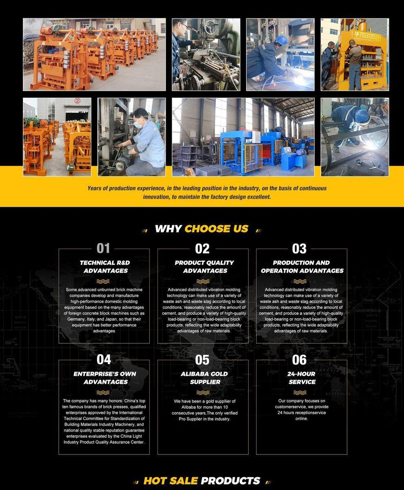
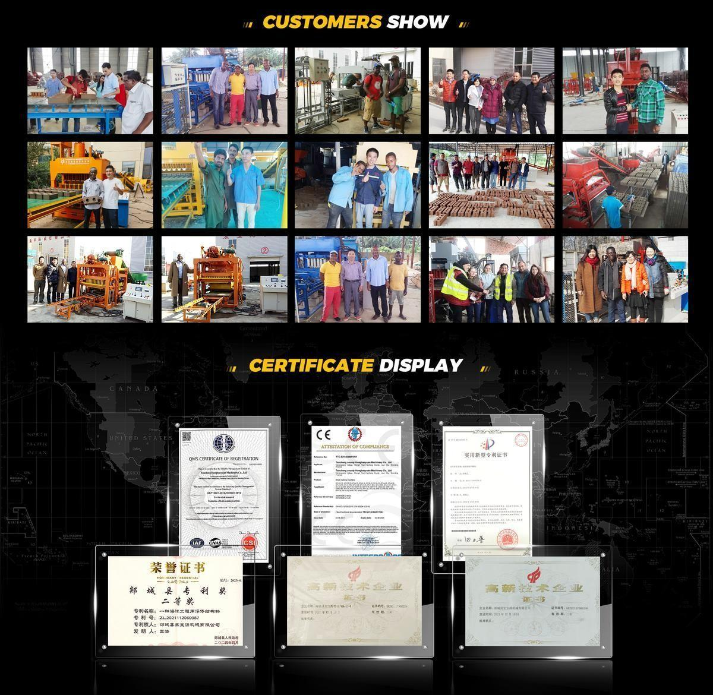
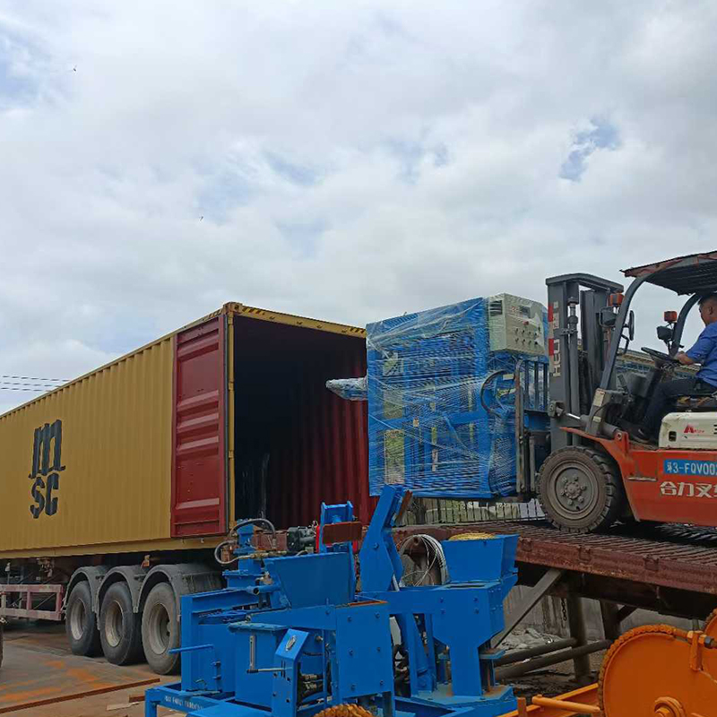

Uzoefu wa zaidi ya miaka 20 wa kutengeneza mashine ya matofali kwa soko la ujenzi la Afrika na kimataifa. Moja kwa moja kutoka kiwandani kwetu cha Uchina.
Sisi ni mtengenezaji mkuu wa OEM wa Kichina mwenye uzoefu wa zaidi ya miaka 20 wa kubuni na kutengeneza mashine ya matofali kwa soko la kimataifa la ujenzi. Aina yetu ya bidhaa inashughulikia mstari wa uzalishaji wa kipekee wa hayidroliki QT4-18, mashine ya nusu-otomatiki QT4-40 na QT4-40A, mashine ya matofali tupu, mashine ya matofali yasiyochomwa, na vinu vya saruji — kila kitu unachohitaji kuanzisha au kukuza kiwanda cha matofali.
Mashine zetu zinaaminiwa na wateja katika nchi 80+ katika Asia, Afrika, Amerika, Ulaya na Oceania. Tunayo vyeti vya ISO 9001:2015 na alama kamili ya CE — vinavyokubaliwa kwenye forodha za Afrika bila kuchelewa. Kiasi cha usafirishaji wa kila mwaka kinafikia mamilioni ya dola za Marekani, ukuaji mkubwa ukitokea Afrika Kusini mwa Sahara.


Takwimu tunaojivunia, zote zimejengwa kontena moja kwa wakati.
| Kipimo | Thamani |
|---|---|
| Miaka ya uzoefu wa utengenezaji | 20+ |
| Nchi zilizosafirishiwa | 80+ (Asia, Afrika, Amerika, Ulaya, Oceania) |
| Kiasi cha usafirishaji wa kila mwaka | Mamilioni ya USD |
| Eneo linalokua kwa kasi zaidi | Afrika Kusini mwa Sahara |
| Vyeti vya ubora | ISO 9001:2015 & CE |

Tumejitolea kujenga ushirikiano wa muda mrefu na wajasiriamali wa Afrika, wakandarasi na wawekezaji wa viwanda vya matofali — kutoka kiwanda chako cha kwanza cha USD 3,000 chenye QT4-40 ya mkono, hadi mstari wa kitaifa wa uzalishaji wa matofali ya mchanga uliojengwa kuzunguka mtambo wa kipekee wa hayidroliki QT4-18.
Iwe unahitaji mashine moja au kontena kamili, unabeba kutoka kwa mshirika yule yule kabla, wakati na baada ya usafirishaji. Hiyo ndio tofauti kati ya kiwanda na kampuni ya biashara.
Tuambie nchi yako na soko lako lengwa — tutapendekeza mashine ya matofali inayofaa na mpango wa usafirishaji ndani ya masaa 12.